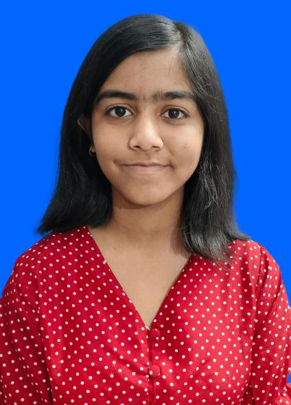

Samadrita Sarmah

Summary
I am a B.Tech undergraduate student with a keen interest in UI/UX design and a growing passion for web development.
With a strong eye for aesthetics and user-centric thinking, I enjoy creating intuitive and visually appealing interfaces.
Currently building my skills in HTML, CSS, and JavaScript, I actively explore design tools like Figma to prototype and improve user experiences.
Eager to learn, collaborate, and contribute to impactful digital products that combine both design and functionality.
Education
Skills
- Languages:
HTML, CSS, JavaScript
- Design Tools:
Figma, Canva, Adobe XD
- Frameworks & Libraries:
Bootstrap, Tailwind CSS, basic React
- Web Tools:
Git, GitHub, VS Code, Chrome DevTools
- Platforms:
Web, Windows, Netlify
- UI/UX Skills:
Wireframing, Prototyping, Responsive Design, Basic UX Research
- Soft Skills:
Creativity, Teamwork, Communication, Time Management
Design Projects
- RSVP Website:
- Designed an RSVP website to enable students to register for workshops with ease, focusing on clarity and usability.
- Created a user-friendly interface with structured layout, smooth user flow, and visual hierarchy for better engagement.
- Ensured responsive design by planning adaptive layouts suitable for both desktop and mobile screens.
- Tool used – Figma.
- MindGlow-A mood tracker app
- Designed MindGlow, a mood tracker app that helps users reflect on their emotional well-being through daily journaling and mood logging.
- Integrated features like mood-based music suggestions, self-care tips, and a monthly mood graph for visual mood analysis.
- Focused on a calming, intuitive UI that encourages consistent use and emotional engagement.
- Tool used – Figma.
- QuickCart- An e-commerce app
- Designed QuickCart, an e-commerce app that allows users to browse products, view details, and add items to their cart seamlessly.
- Created a smooth and intuitive user experience across the homepage, product listing, and cart functionality.
- Focused on clean layout, easy navigation, and responsive design to enhance shopping convenience.
- Tool used – Figma.
Positions of Responsibility
- Junior PR member: NIT Silchar Model United Nations:
- Hospitality Team member: Tecnoesis, NIT Silchar
- Event management Team member: Incandescence, NIT Silchar
- PR Team member: Posua, NIT Silchar
Certifications
- Complete full-stack web development Bootcamp by Dr. Angela Yu
Other
Hobbies
Contact